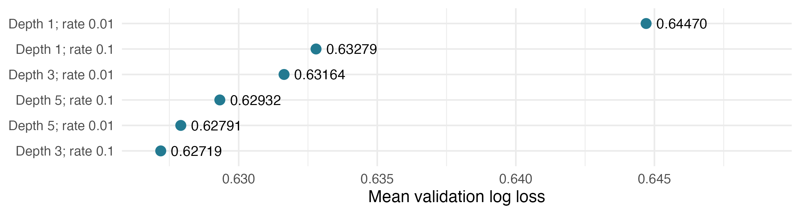
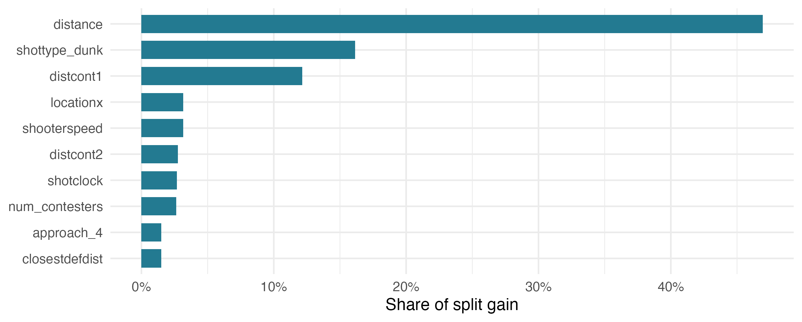
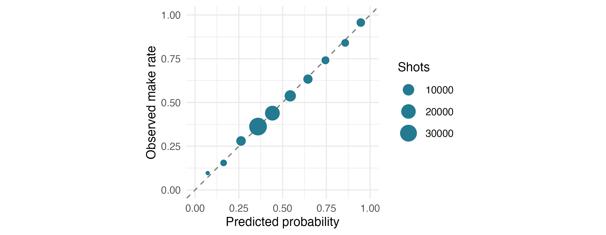

What Makes a Good Shot? Predicting NBA Shot Make Probability
NBA Shot probability Model
NBA
Basketball
A project estimating NBA shot make probability from shot location, defender proximity, movement, and game context, with season-based validation and calibration checks.
Introduction
An open dunk and a contested jumper can both be worth two points, but they are not equally easy shots. Distance matters, but so does the defense. Is someone right next to the shooter? Are they closing in? Is the shooter rushing to beat the shot clock?
For this project, I used the supplied NBA shot data to predict how likely each shot was to go in. I also wanted to understand which details mattered most to the model, instead of just getting a set of predictions.
Data
I only used the data provided for this project. The training set has 425,719 shots where the shooter was not fouled, along with whether each shot went in. The testing set has 213,977 shots, but their outcomes are not provided. About 45.81% of the training shots were made.
Here is an overview of the information used in the model:
- The shot itself: Distance from the basket, court position, shot type, and whether it was a three-pointer.
- The defense: How many defenders contested the shot and how close they were to the shooter.
- Movement: The shooter’s speed and the closest defender’s distance at four moments before release.
- Game situation: Time left on the shot clock, dribbles before the shot, and whether it happened in the halfcourt, in transition, or right after a second chance.
Before building the model, I changed the TRUE/FALSE outcomes into make/miss labels. The closestdefapproach column stored four distances together inside braces, so I split them into separate columns. They show the defender’s distance at 1, 0.75, 0.5, and 0.25 seconds before release. I also calculated how much the distance changed over the last second and how quickly it changed over the last quarter-second. These values show whether the shooter and defender were getting closer, not just how the defender moved.
I checked the court coordinates using the basket location in the brief, (-41.75, 0). Distances calculated from those coordinates were within 0.01 feet of the provided distances. I also checked the missing defender distances. They meant there was no defender in that contester slot, so I left them missing instead of filling in an average distance.
I used shot IDs to put the predictions in the right rows, not to predict makes. I left player and team IDs out of the model and used season IDs only to split the data for evaluation. This keeps the model simpler, but it means two players taking the same type of shot in the same situation can receive the same prediction even if their shooting ability differs.
Methodology
I chose XGBoost because shot difficulty depends on several things working together. For example, being close to the basket may mean something different for a dunk than for a contested layup. XGBoost can learn these combinations and changes in patterns without me having to write a separate rule for each one. It also handles the missing contester distances without replacing them with made-up values.
A basic logistic regression would be easier to explain, but I would need to add curved relationships and interactions to let it handle those patterns. A GAM could learn curves for individual features, but interactions would still need extra choices. A single decision tree would be easy to follow, but its predictions can change a lot depending on the training data. Random forests are another reasonable option, since they also combine trees and can learn complex patterns.
XGBoost was also a practical choice because I had used its recipe/workflow setup in my earlier R work. With the 20-hour limit, I focused on a small comparison I could run and explain. The tradeoff is that hundreds of trees are harder to interpret than a simple regression or one tree, and they can overfit. That is why I checked performance across seasons and included simpler depth-one models. The final comparison tested XGBoost settings, not every model family, so these results do not prove XGBoost is always the best choice.
Model Settings
I tried six combinations: tree depths of 1, 3, and 5, each with learning rates of 0.01 and 0.1. Depth controls how many levels of questions a tree can ask, and learning rate controls how much each new tree changes the prediction. Each model used 500 trees, 80% of the training rows per tree, and min_n = 10. As a basic comparison, I also predicted the training make rate for every shot. I did not combine models or adjust their probabilities afterward.
Validation
The training data have two seasons, and the testing data have a different season. I set aside 20% of each training season for a final check, called the audit, using seed 20270927. For the remaining shots, I trained on one season and checked predictions on the other, then switched them. This is two-fold cross-validation grouped by season. The data-preparation steps were learned from the training side each time.
This checks whether the model works on a different season. The season labels do not tell me which came first, so I cannot call it a test of future-season performance. There were also no game IDs to split by game.
Results
Log Loss: A score for probability predictions. It gives a large penalty when the model is confident but wrong. Lower is better, and I used this score to pick the model.
Brier Score: The average squared difference between the predicted probability and the result: 1 for a make and 0 for a miss. Lower is better here too.
Key Takeaways: The model with depth 3 and learning rate 0.1 had the lowest average log loss. Deeper trees were not always better. The selected model also beat the simpler depth-one models. Still, the two best settings were close, so the same setting might not win on another season.
| Evaluation | Log loss | Brier score |
|---|---|---|
| Constant prediction: CV | 0.68966 | 0.24826 |
| Selected model: CV | 0.62718 | 0.22016 |
| Audit: repeat check | 0.62880 | 0.22087 |
The selected model’s log loss was about 9.1% lower than predicting the same probability for every shot. The table combines all cross-validation shots, while the graph averages the two season scores. This gives slightly different numbers because the seasons have different shot counts.
Model Feature Importance

Key Takeaways: Shot distance had the highest importance, with about 47% of the model’s split gain. Dunk status was next at 16%, followed by first-contester distance at 12%. This suggests that shot location, shot type, and nearby defenders were especially useful to this model. Shooter speed and the shot clock also helped.
Split gain measures how much a feature helped improve the model during training. It does not tell me that moving a defender farther away would cause a certain change in shooting percentage. Some features also describe similar things. Distance and court coordinates overlap, for example, so a lower ranking does not automatically mean a feature is unimportant.
Are the Probabilities Reasonable?

Key Takeaways: On the audit shots, the model predicted 45.79% would go in, compared with 45.77% that actually did. Most groups are close to the dashed line. That is encouraging, but it does not mean the model gets every type of shot equally right.
Heaves were one weakness. For 217 shots, the model predicted an average make chance of 15.8%, but only 7.8% went in. The model was too optimistic about these shots. There were not many heaves to judge from, though, and I did not change the model based on this audit result.
What I Tried and Learned
Earlier work tried a more flexible logistic regression, estimates of player shooting ability, and a different way of fitting XGBoost. For the final version, I used XGBoost with a recipe and workflow. The results here are from that final version. They do not show that every earlier approach was worse.
One thing I learned was that small data-cleaning details can matter. R’s automatic column-type guessing could miss the rare fourth-contester distances, so I set the types explicitly. The TRUE/FALSE outcomes and the four distances stored in one column also needed cleaning. Most importantly, a missing defender distance meant there was no defender in that slot, not that I needed to guess a distance.
Limitations and Future Work
The model does not know who is shooting. I left player IDs out, so two players with the same shot details would receive the same prediction. In reality, their shooting ability could be very different. The model describes the shot situation, but it can miss an important part of what makes a shot likely to go in.
It struggles with some uncommon shots. Heaves are a good example: the model gave them about a 15.8% chance of going in, but only 7.8% were made in the audit. There were just 217 heaves in that group, so there is less evidence to judge them than there is for jumpers or layups. Good overall results can hide errors like this.
Two seasons do not tell the whole story. Training on one season and checking the other gives me a useful comparison, but it does not show how the model will perform in every season. There were no game IDs, so I also could not check performance by game. The data leave out attempts where the shooter was fouled, which means this model does not cover all scoring situations.
With more time and more data provided for the project, I would focus on:
- More seasons and game information: More seasons, game IDs, and dates would let me test the model on later games and keep shots from the same game together.
- More details about the shot: Release height, balance, pass quality, and how the shooter got open could help explain differences between otherwise similar shots.
- Player ability and rare shots: I would consider testing player shooting estimates based only on training shots, with extra caution for players with few attempts. More heaves would also help check that weak spot.
- Checking the probabilities: If I tried adjusting the probabilities, I would use separate data to fit and test the adjustment, rather than changing them to match audit results I had already seen.